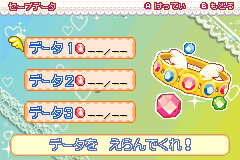

Wagamama Fairy Mirumo de Pon! - Dokidoki Memorial Panic (Japan)
Stateless / Passcode 📺 Joybus 💾 MultiBoot 🎮 4P Link 📡 Wireless
Cartridge Identity
- Game Code
BMIJ(FamilyBMI)- Header Title
MIRUMODEPON6- Maker / Revision
A4/ rev0- ROM Size
- 32.0 MiB (33,554,432 B)
- Save Media
None / Unknown- SHA-256
2af73b87af007ba1e97f38fe1fdcb37a8038de31f8b4a1f4825d090821f55813- Engine / SDK Group
comm-001(196 families)
Screenshots

Niche & Rare Accessories
Detected niche/rare GBA accessory support: 🔌 Wireless Adapter (RFU_V1026).
Full 343-ROM corpus breakdown in the Cartridge Hardware & Niche Accessories Reference · auto-detected from ROM bytes via
gbakit inspect.
- Wireless Adapter (RFU_V1026)
- Nintendo Wireless Adapter (
AGB-015) SDKRFU_V1026+RFU-MBOOT
Link Cable & Multiplayer Communications
This title contains detected communication capabilities: 📺 Joybus 💾 MultiBoot 🎮 4P Link 📡 Wireless.
Detailed protocol specifications, SIO registers, Joybus commands, and MultiBoot sequences are documented in the Link & Multiplayer Reference.
- Multi-Player SIO (4P)
- 16-bit ring network · SIOCNT (
0x04000128) literals:0x001e10,0x001e44,0x0020e8· SIODATA32/SIOMULTI0 (0x04000120) literals:0x0020e0,0x047af0,0x047bb4 - GameCube Joybus
- Register literal
REG_JOYCNT(0x04000140) at offset0x391c90 - GameCube Joybus
- Register literal
REG_JOY_RECV(0x04000150) at offset0x4f04dc - GameCube Joybus
- Register literal
REG_JOY_TRANS(0x04000154) at offset0x57f8ac - Nintendo Wireless Adapter
- AGB-015 RFU driver signature
RFU-MBOOTat offset0x1600fc - Nintendo Wireless Adapter
- AGB-015 RFU driver signature
NINTENDOSio32IDat offset0x160108 - Single-Cart MultiBoot
- Single-Cartridge MultiBoot (Download Play) client/server handler · Thumb SWI 0x25 (
0xDF25):0x0fa0e4,0x1ed10a,0x23a1c6,0x243a20· ARM SWI 0x25 (0xEF000025):0x13dca3c· SDK signatures:MBOOTat0x160100
Cartridge Storage Architecture: Stateless / Passcode
Zero non-volatile battery hardware: This cartridge PCB contains ROM only (no SRAM, Flash, or EEPROM chips). Progression is preserved via on-screen passcodes or session-only gameplay. No
.sav file is generated or required.
ROM Assets, Compression & Audio
- BIOS Compression
- LZ77 (
0x10): 0 streams · RLE (0x30): 0 streams - ROM Pointer Tables
- 77 tables (0 pointing to validated compressed streams)
- SDK Backup Tags
SRAM_V113
Asset Map (formatkit.asset-map.v1)
Download BMIJ-r0-2af73b87af007ba1.asset-map.json.gz (278,390 B (271.9 KiB)) Verified PASS · 14.15% coverage
| Metric | Bytes / Value | Entries |
|---|---|---|
| Identified | 303,092 B (296.0 KiB) (0.90%) | 2,199 |
| Mapped | 0 B (0.00%) | 0 |
| Opaque | 4,443,834 B (4.24 MiB) (13.24%) | 1 |
| Unknown | 28,807,506 B (27.47 MiB) (85.85%) | 2,114 |
| Total ROM Size | 33,554,432 B (32.00 MiB) | 4,314 |
| Coverage % | 14.15% | — |
| Entries w/ Code Refs | 2,292 / 4,314 (53.13%) | — |
Top Identified Formats: compress.bios-huffman (5 · 152,900 B (149.3 KiB)) · gfx.gba-palette (2,192 · 148,864 B (145.4 KiB)) · audio.m4a-song-table (1 · 1,136 B (1.1 KiB)) · gba.rom-header (1 · 192 B)
Largest unknown Extents (Headerless / Custom Asset Candidates)
| Offset | Size | Shannon Entropy | Code Refs |
|---|---|---|---|
0x0168783C | 3,158,172 B (3.01 MiB) | 7.836 bits/B | 0 |
0x01310484 | 298,316 B (291.3 KiB) | 7.233 bits/B | 0 |
0x00EC0860 | 291,488 B (284.7 KiB) | 7.764 bits/B | 0 |
0x00D5387C | 267,052 B (260.8 KiB) | 7.835 bits/B | 0 |
0x013C5958 | 245,052 B (239.3 KiB) | 7.359 bits/B | 0 |
gzip -dk BMIJ-r0-2af73b87af007ba1.asset-map.json.gz && gbakit map verify rom.gba BMIJ-r0-2af73b87af007ba1.asset-map.json
gbakit assets export rom.gba --asset-map BMIJ-r0-2af73b87af007ba1.asset-map.json -o out/Text, Fonts & Scene Data
- Primary Text Encoding
- Compressed / custom-encoded text (
5ASCII strings) - Font & VWF Indicators
- VWF Width Table 1bpp Font · BIOS SWIs: BitUnPack
0x10:16· LZ770x11/12:8· Huffman0x13:10· RLE0x14/15:8 - Scene & Packaging
46ROM pointer tables (≥32 entries,8≥200) ·10relativeu32TOCs ·144OAM metasprite hits
Hardware MMIO Subsystems
ppu_display0x8003a3c